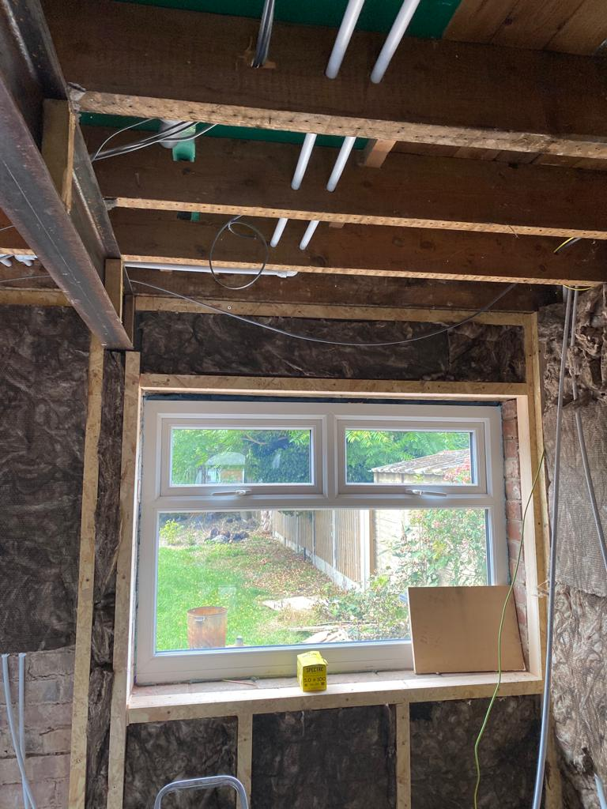

About BAFT
Building stronger homes, confidence and community ownership.
BAFT exists to respond to housing inequality and a lack of community resources by using a community self-build model that creates opportunity, pride and long-term local benefit.

About Us
Building A Better Future Together (BAFT) was born out of a programme of robust research, which identified that a large proportion of young people from impoverished areas across Kirklees, will struggle to buy their own home, or acquire good quality housing, which will impact on their future life chances, e.g. raising stable families, self-belief/pride, mental health, resilience etc.
BAFT research has also highlighted that communities are being starved of vital social resources, that will enable communities to become more self-sufficient and to grow.
BAFT uses the Community-Self-Build model to engage communities in addressing the above challenges.
Community Self-Build
What it can mean
- A building site where everyone is trained up and organised to work together on each other’s homes collectively
- A neighbourhood group setting up a project as a low-cost route to helping local young people to get on the housing ladder
- A group of community members wanting to create an intentional community with shared living spaces
- A community group project to rejuvenate old or derelict buildings into community centres or spaces
Shared Purpose
People shaping the future together
The common thread running through all these projects is people organising themselves together, to create the kind of homes – and communities – that they want.
Our Team


The people behind the work.
Frankie Smith